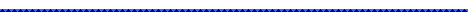

学歴

平成３年３月３１日 広島大学附属高等学校卒業
平成３年４月１日 大阪大学工学部電気系学科入学
平成７年３月３１日 大阪大学工学部情報システム工学科卒業
平成７年４月１日 大阪大学工学研究科情報システム工学専攻博士前期課程入学
平成９年６月３０日 大阪大学工学研究科情報システム工学専攻博士後期課程中退
 平成３年３月３１日 広島大学附属高等学校卒業 平成３年４月１日 大阪大学工学部電気系学科入学 平成７年３月３１日 大阪大学工学部情報システム工学科卒業 平成７年４月１日 大阪大学工学研究科情報システム工学専攻博士前期課程入学 平成９年６月３０日 大阪大学工学研究科情報システム工学専攻博士後期課程中退
平成３年３月３１日 広島大学附属高等学校卒業 平成３年４月１日 大阪大学工学部電気系学科入学 平成７年３月３１日 大阪大学工学部情報システム工学科卒業 平成７年４月１日 大阪大学工学研究科情報システム工学専攻博士前期課程入学 平成９年６月３０日 大阪大学工学研究科情報システム工学専攻博士後期課程中退